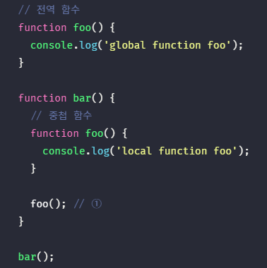

1. 스코프란 #
스코프(유효범위)는 자바스크립트를 포함한 모든 프로그래밍 언어의 기본적이며 중요한 개념이다. 스코프의 이해가 부족하면 다른 개념을 이해하기 어려울 수 있다. 더욱이 자바스크립트의 스코프는 다른 언어의 스코프와 구별되는 특징을 가지므로 주의가 필요하다. 그리고 var 키워드로 선언한 변수와 let 또는 const 키워드로 선언한 변수의 스코프도 다르게 동작한다. 스코프는 변수 그리고 함수와 깊은 관련이 있다.
우리는 스코프를 이미 경험했다. 함수의 매개변수는 함수 몸체 내부에서만 참조할 수 있고 함수 몸체 외부에서는 참조할 수 없다고 했다. 이것은 매개변수를 참조할 수 있는 유효한 범위, 즉 매개변수의 스코프가 함수 몸체 내부로 한정되기 때문이다.
변수는 자신이 선언된 위치에 의해 자신이 유효한 범위, 즉 다른 코드가 변수 자신을 참조할 수 있는 범위가 결정된다. 변수 뿐만 아니라 모든 식별자가 그렇다. 다시 말해, 모든 식별자(변수 이름, 함수 이름, 클래스 이름 등)는 자신이 선언된 위치에 의해 다른 코드가 식별자 자신을 참조할 수 있는 유효 범위가 결정된다. 이를 스코프(Scope, 유효범위)라 한다. 즉, 스코프는 식별자가 유효한 범위를 말한다.
다음 예제를 풀어보자!
출력결과는 'local' 이 1번, 2번은 'global'이다. 유효범위에 우선 순위를 알 수있다. 만약 foo 함수 내에 x가 로컬을 할당받을 때 앞에 var키워드를 붙어줌으로써 새로운 x 변수를 생성시켰다. foo에서 log(x)를 찍는다면 가장 가까운 지역(스코프)에 있는 값을 참조한다. 하지만 이런 코드를 짜지 말도록 하자. 유효범위를 헷갈리게 작성한다면 유지보수가 힘들어진다.
자바스크립트 엔진은 코드를 실행할 때, 코드의 문맥(Context)를 고려한다. 코드가 어디서 실행되며 주변에 어떤 코드들이 있는지에 따라 위 예제의 ①과 ②처럼 동일한 코드도 다른 결과를 만들어 낸다.
- 코드의 문맥과 환경
- “코드가 어디서 실행되며 주변에 어떤 코드들이 있는지”를 환경이라고 부른다. 즉, 코드의 문맥은 환경들로 이루어진다. 이를 구현한 것이 “실행 컨텍스트”이며 모든 코드는 실행 컨텍스트에서 평가되고 실행된다. 스코프는 실행 컨텍스트와 깊은 관련이 있다. 이에 대해서는 나중에 실행 컨텍스트에서 자세히 살펴보도록 하자.

식별자는 어떤 값을 구별할 수 있어야 하므로 유일해야 한다. 따라서 식별자인 변수 이름은 중복될 수 없다. 즉, 하나의 값은 유일한 식별자에 연결되어야 한다.
- var 키워드로 선언한 변수의 중복 선언
- var 키워드로 선언된 변수는 같은 스코프 내에서 중복 선언이 허용된다. 이는 의도치 않게 변수값이 재할당되어 변경되는 부작용을 발생시킨다.
2. 스코프의 종류 #
코드는 전역과 지역으로 구분할 수 있다.
변수는 자신이 선언된 위치(전역 또는 지역)에 의해 자신이 유효한 범위인 스코프가 결정된다. 즉, 전역에서 선언된 변수는 전역 스코프를 갖는 전역 변수이고, 지역에서 선언된 변수는 지역 스코프를 갖는 지역 변수이다.
2.1. 전역과 전역 스코프 #

전역이란 코드의 가장 바깥 영역을 말한다. 전역은 전역 스코프를 만든다. 전역에 변수를 선언하면 전역 스코프를 갖는 전역 변수가 된다. 전역 변수는 어디서든지 참조할 수 있다.
2.2. 지역과 지역 스코프 #
지역이란 함수 몸체 내부를 말한다. 지역은 지역 스코프(local scope)를 만든다. 지역에 변수를 선언하면 지역 스코프를 갖는 지역 변수(local variable)가 된다. 지역 변수는 자신이 선언된 지역과 하위 지역(중첩 함수)에서만 참조할 수 있다. 다시 말해 지역 변수는 자신의 지역 스코프와 하위 지역 스코프에서 유효하다.
3. 스코프 체인 #
함수는 전역에서 정의할 수도 있고 함수 몸체 내부에서 정의할 수도 있다. 함수 몸체 내부에서 함수가 정의된 것을 ‘함수의 중첩’이라 한다. 그리고 함수 몸체 내부에서 정의한 함수를 ‘중첩 함수’, 중첩 함수를 포함하는 함수를 ‘외부 함수’라고 부른다.
함수는 중첩될 수 있으므로 함수의 지역 스코프도 중첩될 수 있다. 이는 스코프는 함수의 중첩에 의해 계층적 구조를 갖는다는 것을 의미한다. 다시 말해 중첩 함수의 지역 스코프는 중첩 함수를 포함하는 외부 함수의 지역 스코프와 계층적 구조를 갖는다. 이때 외부 함수의 지역 스코프를 중첩 함수의 상위 스코프라 한다.

이처럼 모든 스코프는 하나의 계층적 구조로 연결되며 모든 지역 스코프의 최상위 스코프는 전역 스코프이다. 이렇게 스코프가 계층적으로 연결된 것을 스코프 체인이라 부른다. 위 그림에서 스코프 체인은 최상위 스코프인 전역 스코프, 전역에서 선언된 함수 outer의 지역 스코프, 함수 outer 내부에서 선언된 함수 inner의 지역 스코프로 이루어진다.
변수를 참조할 때, 자바스크립트 엔진은 스코프 체인을 통해 변수를 참조하는 코드의 스코프에서 시작하여 상위 스코프 방향으로 이동하며 선언된 변수를 검색한다. 이를 통해 상위 스코프에서 선언한 변수를 하위 스코프에서도 참조할 수 있다.
- 렉시컬 환경
- 스코프 체인은 실행 컨텍스트의 렉시컬 환경을 단방향으로 연결한 것이다. 전역 렉시컬 환경은 코드가 로드되면 곧바로 생성되고 함수의 렉시컬 환경은 함수가 호출되면 곧바로 생성된다.
변수 선언이 실행되면 변수 식별자가 이 자료 구조(렉시컬 환경)에 등록되고, 변수의 할당이 일어나면 이 자료 구조의 변수 식별자에 해당하는 값을 변경한다. 변수의 검색도 이 자료 구조 상에서 이루어진다.
3.1. 스코프 체인에 의한 변수 검색 #
이처럼 자바스크립트 엔진은 스코프 체인을 따라 변수를 참조하는 코드의 스코프에서 상위 스코프 방향으로 이동하며 선언된 변수를 검색한다. 절대 하위 스코프로 내려가면 식별자를 검색하는 일은 없다. 이는 상위 스코프에서 유효한 변수는 하위 스코프에서 자유롭게 참조할 수 있지만 하위 스코프에서 유효한 변수를 상위 스코프에서 참조할 수 없다는 것을 의미한다.
스코프 체인으로 연결된 스코프의 계층적 구조는 부자 관계로 이루어진 상속(Inheritance)과 유사하다. 상속을 통해 부모의 자산을 자식이 자유롭게 사용할 수 있지만 자식의 자산을 부모가 사용할 수는 없다. 스코프 체인도 마찬가지 개념이다.
3.2. 스코프 체인에 의한 함수 검색 #
함수도 식별자에 할당되기 때문에 스코프를 갖는다. 사실 함수는 식별자에 함수 객체가 할당된 것 외에는 일반 변수와 다를 바가 없다. 따라서 스코프를 “변수를 검색할 때 사용하는 규칙”이라고 표현하기 보다는 “식별자를 검색하는 규칙”이라고 표현하는 것이 보다 적합하다.
다음 예제를 확인해보자

위 결과는 'local function foo' 가 출력된다. 따라서 위 예제의 모든 함수는 자바스크립트 엔진에 의해 암묵적으로 선언된 함수 이름과 동일한 이름의 식별자에 할당된다. ①에서 함수 foo를 호출하면 자바스크립트 엔진은 함수를 호출하기 위해 먼저 함수를 가리키는 식별자 foo를 검색한다.
4. 함수 레벨 스코프 #
지역은 함수 몸체 내부를 말하고 지역은 지역 스코프를 만든다. 이는 코드 블록이 아닌 함수에 의해서만 지역 스코프가 생성된다는 의미이다.
C나 Java 등 대부분의 프로그래밍 언어는 함수 몸체 만이 아니라 모든 코드 블록(if, for, while, try/catch 등)이 지역 스코프를 만든다. 이러한 특성을 블록 레벨 스코프라 한다. 하지만 var 키워드로 선언된 변수는 오로지 함수의 코드 블록 만을 지역 스코프로 인정한다. 이러한 특성을 함수 레벨 스코프라 한다.
5. 렉시컬 스코프 #
다음 예제를 보자!
결과는 1 과 1이다 위 예제의 실행 결과는 함수 bar의 상위 스코프가 무엇인지에 따라 결정된다. 두가지 패턴을 예측할 수 있다.
- 함수를 어디서 호출했는지에 따라 함수의 상위 스코프를 결정한다.
- 함수를 어디서 정의했는지에 따라 함수의 상위 스코프를 결정한다.
첫번째 방식으로 함수의 상위 스코프를 결정한다면 함수 bar의 상위 스코프는 함수 foo와 전역일 것이다. 두번째 방식으로 함수의 상위 스코프를 결정한다면 함수 bar의 상위 스코프는 전역일 것이다. 프로그래밍 언어는 일반적으로 이 두가지 방식 중 하나의 방식으로 함수의 상위 스코프를 결정한다.
첫번째 방식을 동적(다이나믹) 스코프라 한다. 함수 정의 시점에는 함수가 어디서 호출될 지 알 수 없다. 따라서 함수가 호출되는 시점에 동적으로 상위 스코프를 결정해야 하기 때문에 동적 스코프라고 부른다.
두번째 방식을 렉시컬 스코프 또는 정적(스태틱) 스코프라 한다. 동적 스코프 방식처럼 상위 스코프가 동적으로 변하지 않고 함수 정의가 평가되는 시점에 상위 스코프가 정적으로 결정되기 때문에 정적 스코프라고 부른다. 자바스크립트를 비롯한 대부분의 프로그래밍 언어는 렉시컬 스코프를 따른다.
자바스크립트는 렉시컬 스코프를 따르므로 함수를 어디서 호출했는지가 아니라 함수를 어디서 정의했는지에 따라 상위 스코프를 결정한다. 즉, 모든 함수 정의(함수 선언문 또는 함수 표현식)는 평가되어 함수 객체를 생성할 때, 자신이 정의된 스코프를 상위 스코프로서 기억한다. 그리고 함수가 호출되면 언제나 자신이 기억하고 있는 자신이 정의된 스코프를 상위 스코프로 사용한다. 함수가 호출된 위치는 함수 자신이 기억하고 있는 스코프, 즉 상위 스코프 결정에 어떠한 영향을 주지 않는다.